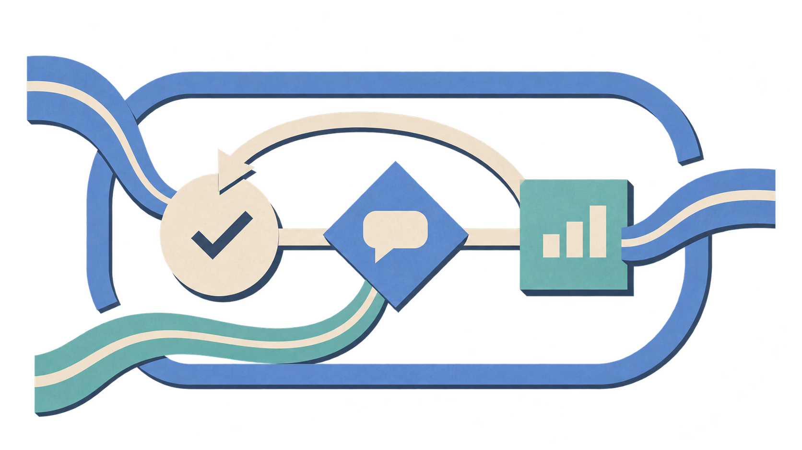
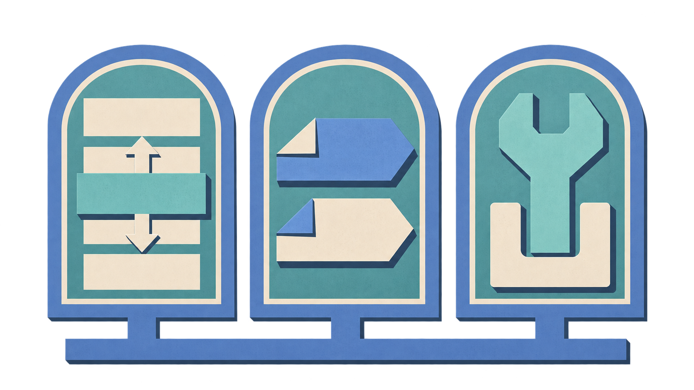
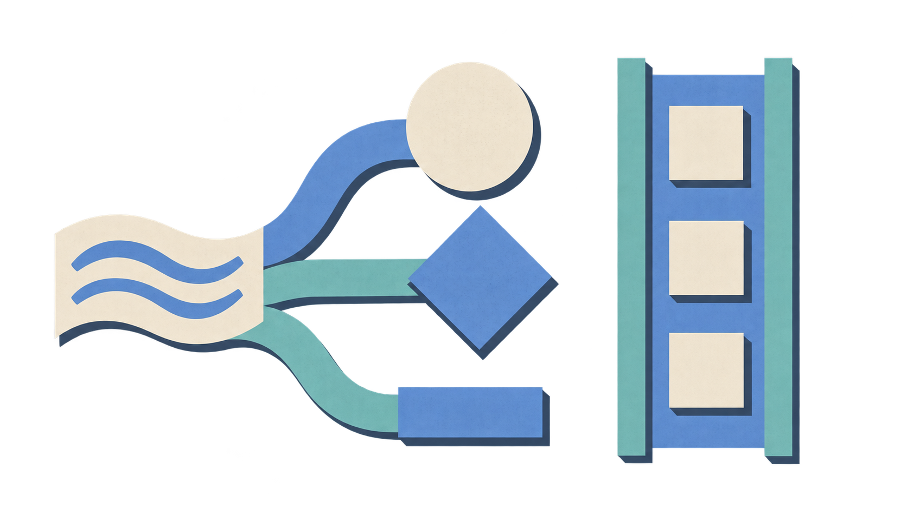
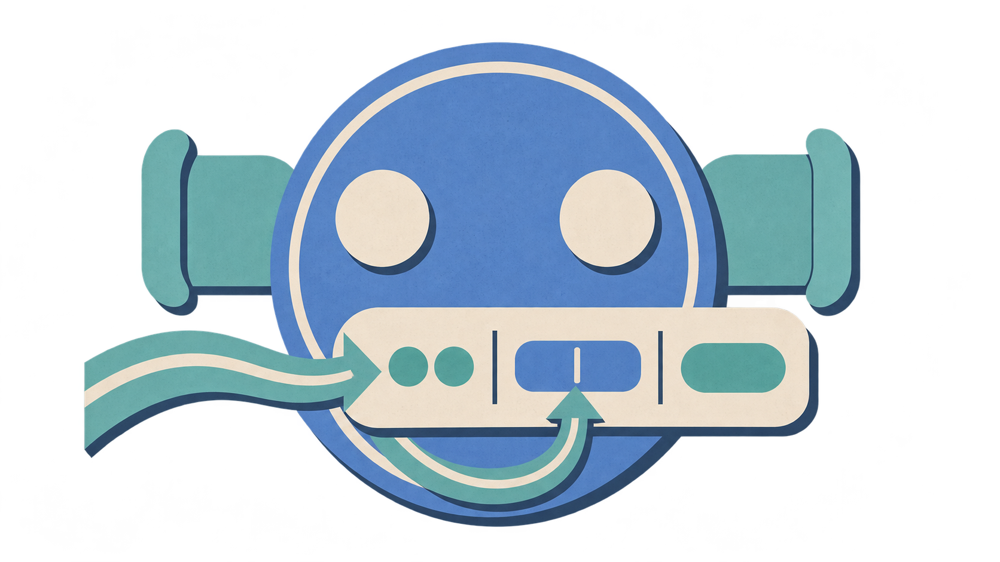
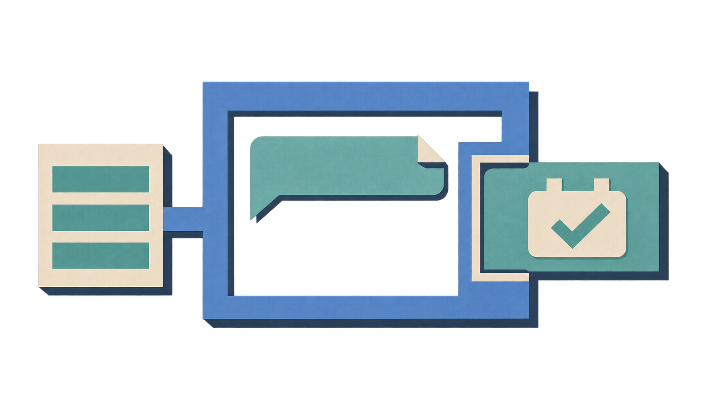
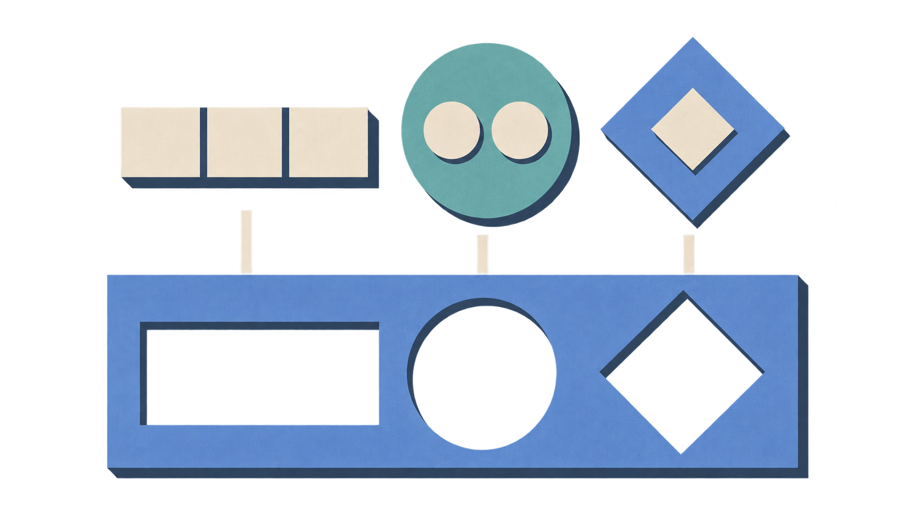
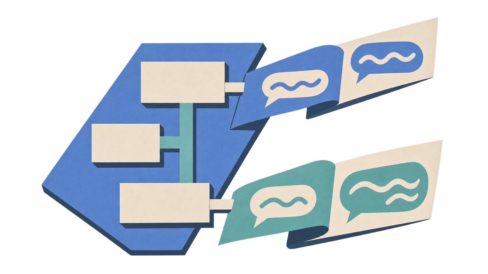
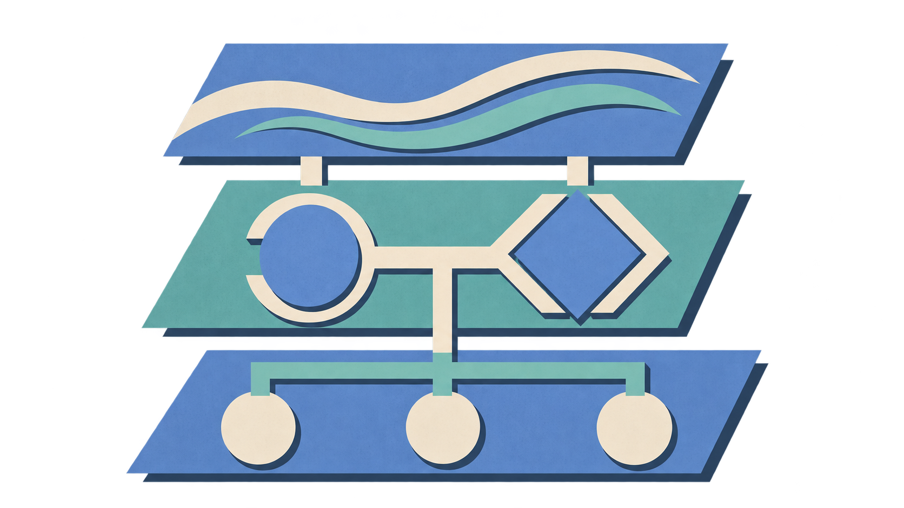

COVER 01
Interaction Closure: What Business Voice AI Needs
Conversational paths, governed states, and a return loop for corrections.
Latest direction: View the new hand-drawn specialists pilot and its revised specification. The geometric set below is retained for comparison.
Flat geometry, subtle print grain, a shared blue/teal/cream palette, and a distinct visual metaphor for each article. These are review candidates; the website's current covers have not been replaced.

Conversational paths, governed states, and a return loop for corrections.

Three bounded responsibilities coordinated through a shared base.

Variable interpretation contrasted with a constrained, repeatable track.

A top-down restaurant table paired with a revisable reservation strip.

A finished reservation capability inserted into an application.

Separate typed components aligned with their matching slots.

A structured schema feeding contextual conversation examples.

Language, interaction, and service layers composed into one application.